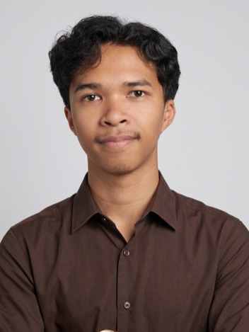
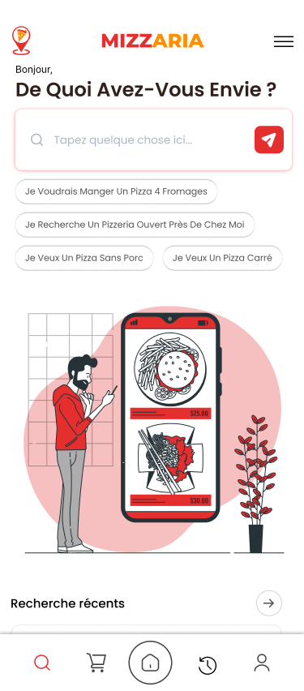
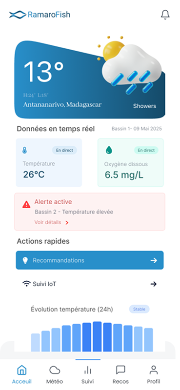

IA · Automatisation
Assistant de traitement d’emails
Un assistant qui trie les messages et prépare des réponses à valider.
2 h → 25 min / jour
Voir l’étude →Je suis Sarobidy, designer UI/UX et développeur. Je crée des applications mobiles et des systèmes IA, de la conception à la réalisation.

Un aperçu de mon travail, du design aux systèmes IA.
Un assistant qui trie les messages et prépare des réponses à valider.
Une application mobile de recherche et de commande pour une pizzeria.
Voir le projet →
Une application pour la gestion d’une ferme piscicole intelligente.
Voir le projet →
Trois façons d’accompagner un produit.
Imaginer des parcours, concevoir des interfaces et construire des prototypes.
Transformer des maquettes en applications mobiles avec Flutter et React Native.
Concevoir des outils qui simplifient des tâches et laissent leur place aux décisions humaines.
Mes expériences en développement, design et intelligence artificielle, réunies au même endroit.
Découvrir mon parcours →Certifications et compétences qui accompagnent mon travail au quotidien.
Voir les certifications →Parlons de ce que nous pourrions construire ensemble.